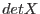
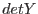
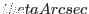
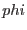

*** There is no subroutine with this name???
interface instToRaDec
subroutine instToRaDecScalar(raDeg, decDeg, scAttitude&
, timeStamp, detX, detY, thetaArcsec, phi)
real(double), intent(out) :: raDeg,&
decDeg
type(SpacecraftAttitudeType), intent(in) :: scAttitude
real(double), intent(in) :: timeStamp
real(single), optional, intent(in) :: detX,&
detY
real(double), optional, intent(in) :: thetaArcsec,&
phi
end subroutine instToRaDecScalar
subroutine instToRaDecVector(raDeg, decDeg, scAttitude&
, timeStamp, detX, detY, thetaArcsec, phi)
real(double), intent(out) :: raDeg(:),&
decDeg(size(raDeg))
type(SpacecraftAttitudeType), intent(in) :: scAttitude
real(double), intent(in) :: timeStamp
real(single), optional, intent(in) :: detX(size(raDeg)),&
detY(size(raDeg))
real(double), optional, intent(in) :: thetaArcsec(size(raDeg)),&
phi(size(raDeg))
end subroutine instToRaDecVector
! instToRaDecArray not yet done
end interface
This subroutine converts to celestial coordinates from instrument-centric coordinates, in either the DETX/Y (the same, up to a scalar multiple, as the CAMCOORD2 system) or TELCOORD systems, depending on which of the optional variables , ,  and  the caller has supplied.
NOTE this function requires the cal to have been set to the correct instrument before the call.